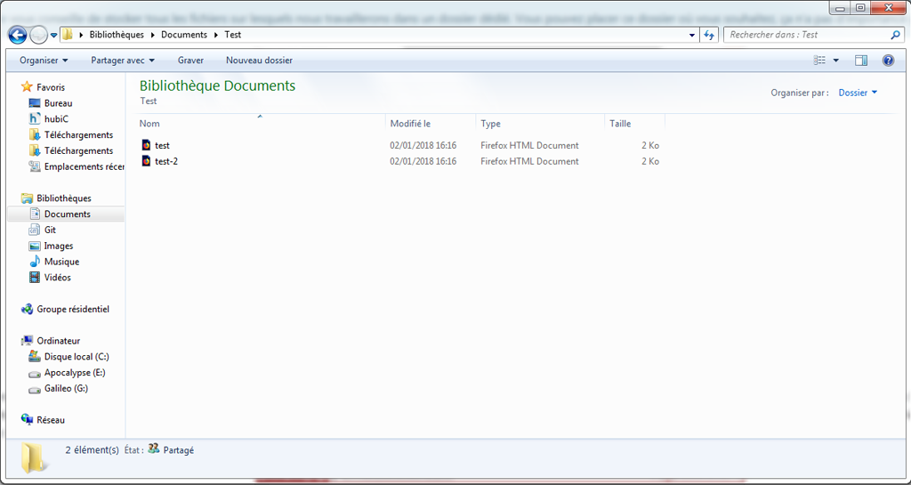

Temps de lecture : 15 Minutes
Nous avançons à grands pas dans l'apprentissage du HTML. Nous avons découvert de nombreuses balises et des outils pertinents. Seulement, notre site ne comporte qu'une seule page et notre contenu n'est que textuel. Dans ce chapitre, nous découvrirons l'importance des liens hypertextes, aussi appelés "hyperliens" ou tout simplement "liens", ainsi que l'utilisation des images.
Pour faire un lien, il faut utiliser la balise normale <a>. Il y a donc une balise ouvrante et une fermante. est toujours accompagnée de son attribut préféré : href="". La valeur de cet attribut précise vers quelle page le lien doit conduire. Ci-dessous un exemple.
<h2>Mon Portefolio</h2>
<p>
Salut moi c'est Sana clic <a href="https://sandjeli.github.io/Sandjeli/"> ICI</a> pour voir mon site.
</p>
Il existe deux grandes catégories de liens : les liens absolus et les liens relatifs. Explication.
Pour faire un lien absolu, il suffit de copier le lien de la barre d'adresse et de le coller en valeur de l'attribut href="". C'est un lien absolu car le lien complet. Il comporte notamment le fameux http ou https. L'exemple ci-dessus est un lien absolu.
Les liens relatifs sont très utiles pour créer des liens entre les différentes pages d'un site web. Pour illustrer ce concept, nous allons créer un second fichier dans notre dossier de travail.
Vous ne vous souvenez pas comment faire ou vous avez raté une étape ?.
en suivant les instructions de la vidéo, créez un nouveau fichier HTML.
Vous devriez vous retrouver dans le même dossier avec deux fichiers HTML., comme ci-dessous. Vous pouvez nommer le fichier comme vous le souhaitez.

Maintenant que nous avons deux fichiers, nous souhaitons faire un lien du premier fichier vers le second. On souhaite donc dans notre exemple modifier le
fichier test.html pour ajouter un lien relatif qui pointera vers test-2.html. Ci-après le lien relatif à ajouter.
<p>Je souhaite faire un lien vers la <a href="test-2.html">deuxième page</a></p>
Je vous invite à tester et apprécier ce mécanisme incroyable. Vous savez désormais construire un site web avec plus d'une page.
Cependant, il existe aussi des cas où les pages sont dans des dossiers différents comment faire pour crée un lien ?
Excellente question. Pour y répondre, nous allons prendre l'exemple de l'arborescence suivante :
Nous venons d'apprendre à utiliser les liens hypertextes. Leur but est de faire des liens entre des pages web. Ils permettent également de créer des liens vers un endroit précis de la page sur laquelle ils sont, ou d'une autre page. Ces endroits précis sont appelés des ancres. Ajouter une ancre est très facile. Il faut tout d'abord ajouter un identifiant unique avec l'attribut id="", sur l'élément sur lequel on veut pointer.
L'attribut id="" définit un identifiant qui doit être unique pour l'ensemble de la page. Cela permet de cibler un élément en particulier très facilement.
Une fois que l'identifiant est ajouté, il suffit de faire un lien vers l'élément en question grâce à la syntaxe ci-dessous.
<!--élément avec l'identifiant-->
<h2 id="lienversh2">Ma page</h2>
<!--Le lien avec l'ancre-->
<a href="#lienversh2"> Allez vers h2</a>
Ainsi, quand l'utilisateur cliquera sur le lien avec l'ancre, il sera déplacé au niveau du <h2> dans la page.
Grâce au HTML5, il existe une ancre spéciale qui permet de faire remonter l'utilisateur en haut de la page : #top. Pour qu'elle fonctionne, il ne faut pas avoir identifié un de ses éléments avec l'id="top".
L'attribut title="" est facultatif mais ô combien utile et utilisé. Il permet d'afficher une infobulle au survol du lien. Il s'utilise de la manière suivante :
<a href="https://www.google.fr/" title="Moteur de recherche"> Google</a>
La balise <a> permet également de déclencher l'ouverture de l'application de messagerie de l'utilisateur pour lui permettre d'envoyer un nouvel e-mail au destinataire précisé. Pour ce faire, il n'y a pas d'attribut particulier mais simplement une syntaxte précise à respecter dans l'attribut href="" dont nous avons déjà parlé. Un exemple ci-dessous
<a href="mailto:sanaabdouldjelil5@gmail.com" title="me contacter"> Envoyer un e-mail</a>
Semblable à la fonctionnalité qui permet de déclencher l'envoi d'un e-mail, la balise <a> propose également de composer un numéro de téléphone. Avant que le HTML5 voit le jour, les numéros de téléphone étaient ajoutés en texte standard, dans un <p> par exemple. Grâce à cette fonctionnalité, un simple clic sur ce type de lien compose directement le numéro. C'est notamment très pratique depuis un smartphone. La syntaxe est similaire à celle de mailto.
<a href="tel:+2250575087250" title="Contacter moi"> Appeler moi</a>
L'attribut download="" est bien évidemment aussi facultatif et s'utilise dans des cas précis. En effet, il permet de forcer le téléchargement d'une ressource au lieu de la faire afficher par le navigateur web. Il est préférable d'utiliser cet attribut uniquement dans le cas précis du téléchargement d'une ressource pour ne pas trop contraindre l'utilisateur. Il s'utilise comme ceci :
<a href="monfichier.txt" download="superfichier.txt"> Télécharger mon fichier</a>
Il n'est pas rare, lorsque l'on navigue sur le web, de cliquer sur des liens qui ouvrent de nouveaux onglets. Pour reproduire cette mécanique, il faut utiliser un attribut avec une valeur précise : target="_blank". L'association de cet attribut avec cette valeur ouvrira le lien dans un nouvel onglet. Dans le fichier HTML
L'insertion d'une image dans une page HTML se fait à l'aide de la balise orpheline <img>. Il n'y a donc pas de balise ouvrante ni fermante. Cette balise est toujours accompagnée de deux attributs :
<img src="imagetest.png" alt="Ma belle maison de campagne" />
Il faut faire attention aux noms des fichiers. Il est important de ne pas utiliser certains caractères pour éviter certains désagréments. Remplaçez les majuscules par des minuscules, n'utilisez pas les caractères accentués et spéciaux, et remplaçez les espaces par des tirets. En somme, remplacez J'aime l'été.png par j-aime-l-ete.png.
Tout comme sur la balise <a>, l'attribut title="" peut être utilisé sur la balise <img>. Il est aussi facultatif, mais toujours aussi utile et utilisé. La mécanique ne change pas, il s'utilise de la même manière :
<img src="imagetest.png" alt="aperçu du projet dans visualcode" title="aperçu du projet dans visualcode" />
Le contenu de ce cours a été dense et vous reviendrez sûrement plusieurs fois dessus pour bien assimiler certaines notions, notamment celles des liens relatifs et absolus. Vous pouvez attaquer facilement le Quiz. Rendez-vous au prochain chapitre pour encore plus de balises HTML chao.
Ce cours sur le HTML en est un parmi tant d'autres. Le web regorge de ressources sur le développement web. Celui-ci a été rédigé par mes soins et est orienté pour les débutants. Il est non-exhaustif. Si vous repérez une erreur ou un oubli, vous pouvez bien évidemment me contacter. me contacter
Ce cours a été rédigé en mars 2025.